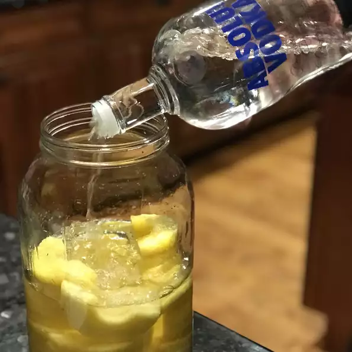

Vodka

Ingredients
- 1 fresh pineapple, peeled and sliced
- 1 (750 milliliter) bottle vodka (such as Stolichnaya®)
Directions
- Stack pineapple slices in a circle around the edges of a large glass jar, leaving the center open. Pour vodka into jar, completely covering pineapple. Seal jar and store in a cool, dark place for 10 days.
- Remove pineapple and strain vodka through a mesh strainer back into a jar; seal and refrigerate.